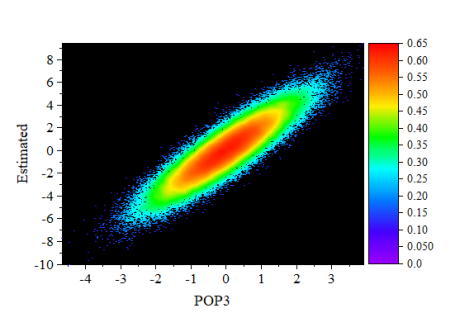
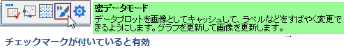

密度ドット
Density_Dots
- 
要求されるデータ
1つのY列または、1つのY列のデータ範囲を選択します。 関連付けられたX列がある場合はそれを使用し、そうでない場合は、Y列のサンプリング間隔または行番号が使用されます。
グラフ作成
- Y列のデータを選択します。
- メニューからを選択します。
テンプレート
DensityDots.OTPU (Originのプログラムフォルダにインストールされています。)
アルゴリズム
データサイズが小さい場合、カーネル密度の計算に的確な推定が使用されます。
データサイズが大きい場合（システム変数KDMで定義され、デフォルト値は20,000）、高速アルゴリズムを使って密度を計算します。まず、2Dビン化近似を使用して、2Dグリッドポイントのセットのカーネル密度を計算します（システム変数DCGSによって定義され、デフォルト値は151*151です）。次に、2D補間を適用して、グリッドの密度値から元の（x、y）ポイントに対応する密度値を構築します。
ノート
このテンプレートは、点の密度 が特に重要な場合の多数の散布ポイントをグラフ化することを目的としています。
- デフォルトでスピードモードはオフになり、密度は正確にグラフ化されます。
- テンプレートは、サイズ「0」のデフォルトの塗りつぶし正方形シンボルを使用します。
- このグラフタイプでは高速なグラフ再描画のために、ビットマップキャッシングがオンになっています。キャッシングを使用すると、ウィンドウがサイズ変更または拡大されると、必要に応じて、準備されたビットマップのサイズが変更され、再配分されます。場合によっては、このビットマップはピクセル化または変形する可能性があり、これが受け入れられない場合、ページレベルのミニツールバーの密データモードボタンを2回クリックしてキャッシュをオフにすることができます（2回目のクリック後、チェックマークがなくなります）。
- 
- グラフページがウィンドウビュー（デフォルト）で、単一レイヤを含み、サイズ「0」の塗りつぶし正方形シンボルを使う場合、編集：ページコピーを選択するとラスターイメージがクリップボードに配置されます。
- 散布図のポイントは、プロットされた各点に対して計算された「近接」係数を使用して、カラースケールにマッピングされます。そのため、ポイントの位置はXY座標によって決定されますが、そのポイントに割り当てられる色はアルゴリズムを使用して計算されます。色は、Y値の相対的な大きさに基づいて割り当てられません。
- このテンプレートは、カラーチューザーのポイント毎タブにある密度カラーマッピングオプションを使用します。他のカラーマップグラフと同様に、作図の詳細のカラーマップタブでカラーマップ自体を設定できます。